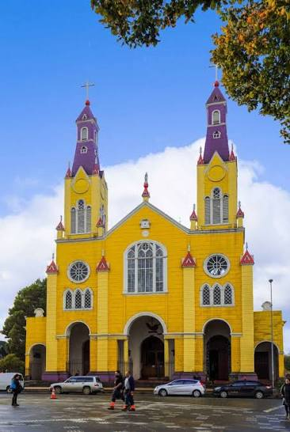
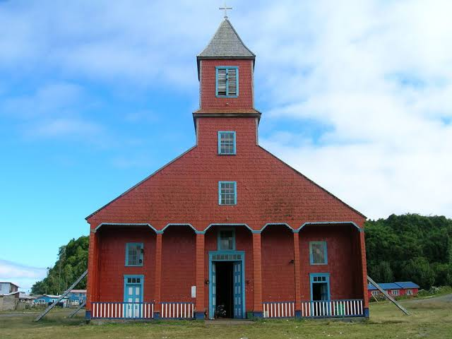

Iglesias de Chiloe
Región: De Los Lagos
Comunas: Castro, Chonchi, Dalcahue, Puqueldón, Quemchi y Quinchao
Tipo: Monumento Historico
Declaración: 1951 y 1971
Estado: Deterioro Critico
Las iglesias de Chiloé son un conjunto de edificaciones religiosas que representan un patrimonio cultural inmaterial de gran importancia histórica y social. Estas iglesias, construidas a lo largo del siglo XVIII y XIX, son testimonios vivos de la arquitectura religiosa chilena y su capacidad para integrar diferentes zonas geográficas.